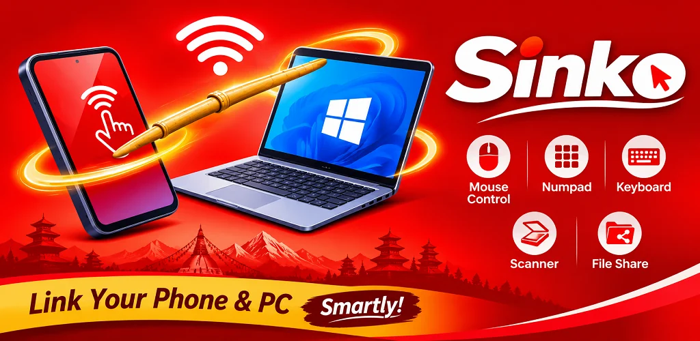

Numpad & calculator
A full number pad for laptops without one, plus Tab, Enter, arrows and F1–F12. Work out a sum and send the result straight into Excel.
Made in Nepal · Free for Android
Sinko turns your Android phone into a numpad, mouse, keyboard, media remote, barcode scanner, document scanner and file sharer for your computer. Connect over Bluetooth, or over Wi-Fi with Sinko Server.
Android 9 or newer · Bluetooth needs nothing installed on the PC

Features
Everything you reach for at your desk, already in your pocket.
A full number pad for laptops without one, plus Tab, Enter, arrows and F1–F12. Work out a sum and send the result straight into Excel.
Turn the phone to move the pointer like a TV remote, which is great for presentations. Or use the whole screen as a touchpad with tap, scroll and drag.
Type on your phone and it appears on the PC. Perfect for voice typing and for languages your PC keyboard isn't set up for, like Nepali.
Play/pause, next, previous, stop and mute. Drag sideways to seek and up or down for volume, all from the sofa.
Send files and text between your phone, your PC and other phones on the same Wi-Fi. Fast Transfer links devices directly with a QR code.
Point the camera at a barcode and it's typed into the PC, just like a plugged-in scanner. Optionally ask for a quantity to fill a spreadsheet row. Reads QR codes too.
Pages are found, straightened and cleaned up automatically. With Live to PC, each page lands on your computer as you scan. Hands Free, ID card and book modes included.
Merge, split, compress, reorder and password-protect PDFs. Add signatures and notes to pages right on your phone.
Lock documents, PDFs, photos and videos behind a password or fingerprint. Everything is encrypted on the phone, and videos play without an unlocked copy.
How it connects
Pick the one that suits your PC, or use both.
Your phone becomes a standard Bluetooth keyboard and mouse. Pair it once like any other Bluetooth device.
Install the free Sinko Server app on Windows and connect over your own Wi-Fi network. It adds everything Bluetooth can't do.
Get the app on your Android phone (Android 9 or newer).
Pair over Bluetooth, or open Sinko Server on your PC and connect on the same Wi-Fi.
Pick numpad, mouse, text, media, share, scanner or documents, and go.
Private by design
Sinko has no account, no analytics and no server of ours. It's free, supported by small banner ads.
Read the privacy policyIn Nepali, a sinko is the small bamboo pin that stitches leaves together into a tapari, a traditional leaf plate. Sinko is the pin between your phone and your PC. The name also echoes sync and control.
FAQ
Yes. Sinko is free and shows small banner ads on some screens. There's no account and no sign-up.
Not for Bluetooth: your phone pairs as a normal Bluetooth keyboard and mouse. For Wi-Fi, file sharing and Live to PC scanning, install Sinko Server on Windows.
Over Bluetooth, yes: Windows, macOS, Linux and ChromeOS all accept Sinko as a keyboard and mouse. Sinko Server (Wi-Fi features) is currently for Windows.
A few phone makers turn off the Android feature that lets a phone act as a Bluetooth keyboard. On those phones, use Wi-Fi with Sinko Server instead.
No. Your input, files, scans and vault never leave your devices except to the PC or phone you send them to. The only internet use is Google's ads, short app announcements and Play update checks. See the privacy policy.
Use your recovery code. Without the password or the recovery code nobody, including us, can open the vault. That's what keeps it private.
Free for Android 9 and newer. Set up in under a minute.